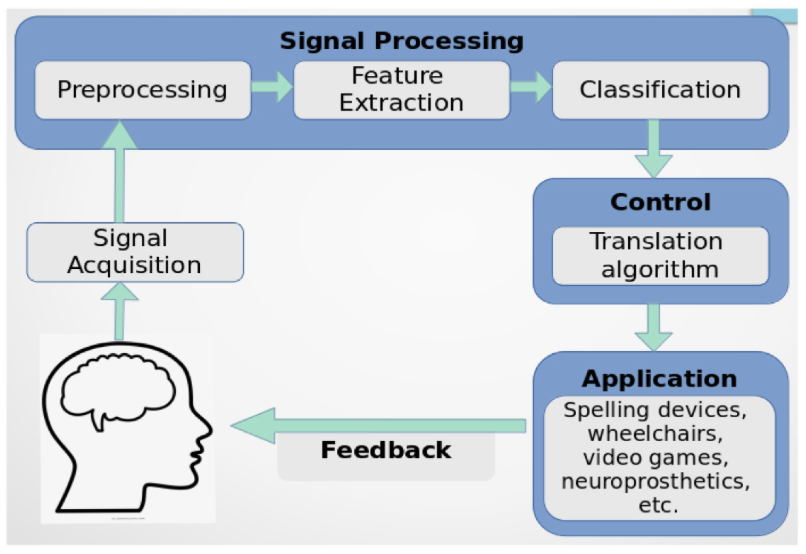
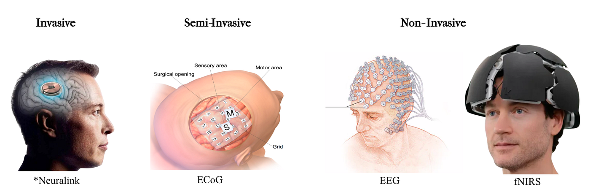
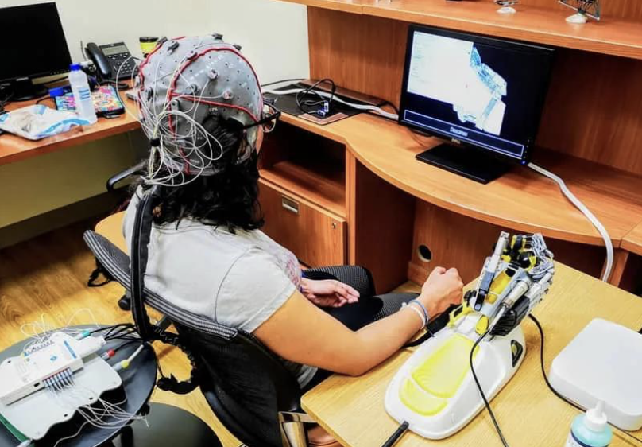

1. Introduction & Definition
Neural Interfaces are technologies that establish a connection between the human nervous system and external electronic devices. Their purpose is to monitor, interpret or interact with neural activity, allowing information to be exchanged between the nervous system and a computer or another device. [4]
One of the most important examples is the Brain–Computer Interface (BCI), also known as a Brain–Machine Interface (BMI). A BCI is a direct communication link between the brain's electrical activity and an external device, most commonly a computer or a robotic limb. [1]
Unlike traditional human–computer interfaces, which usually require physical actions such as typing on a keyboard, moving a mouse or touching a screen, BCIs can interpret brain activity and translate it into commands without requiring the user to perform the corresponding physical movement. [1]
These technologies are particularly important for people with disabilities because they can help restore or assist functions such as movement, communication and sensory abilities. [3]
2. History & Evolution
The development of Neural Interfaces is closely connected to the discovery of the brain's electrical activity.
In 1924, German psychiatrist Hans Berger became the first person to record human brain activity using electroencephalography (EEG). This technique allowed researchers to observe electrical signals produced by the brain and opened new possibilities for neuroscience research. [2]
The term Brain–Computer Interface was introduced by Jacques Vidal in 1973, during research at the University of California, Los Angeles (UCLA). He proposed the possibility of controlling external objects using electrical signals recorded from the brain. [1]
In 1977, Vidal demonstrated a non-invasive BCI that allowed a user to control a cursor-like object on a computer screen using brain signals. [1]
In 1988, researchers demonstrated the first non-invasive EEG control of a physical robot. The system allowed the robot to start, stop and restart its movement along a predefined path. [2]
During the 1990s and 2000s, research advanced through experiments involving animals and humans. Researchers developed systems capable of interpreting neural signals to reproduce movements and control robotic devices. [1]
An important milestone occurred in 2005, when Matthew Nagle became the first person to control an artificial hand using an implanted BCI as part of a clinical trial. This demonstrated the potential of brain signals to control external devices even when normal physical movement is not possible. [6]
3. How It Works
A Brain–Computer Interface works by recording brain activity and translating the detected signals into commands that an external device can understand. [1]
The brain contains billions of neurons that communicate through electrical and chemical signals. When neurons become active, they generate electrical activity that can be measured using specialised sensors called electrodes. [4]
The process can be described through four main stages:
Signal Acquisition
Electrodes collect electrical activity generated by the brain. They can be placed on the scalp or positioned closer to, or directly inside, brain tissue, depending on the type of interface. [2] [5]
Signal Processing
The recorded signals are often weak and can contain unwanted interference. The system processes the collected information to identify useful patterns and reduce noise. [1]
Signal Interpretation
Algorithms analyse the processed signals and attempt to identify the user's intentions. For example, different patterns of brain activity can be associated with imagining a hand movement or focusing attention on a particular visual symbol. [1]
Device Control
The interpreted signals are translated into commands that control an external device. This could be a computer cursor, a robotic arm, a communication system or another electronic device. [1]
Some systems also provide feedback to the user. For example, a person may imagine moving their hand and then see a robotic hand perform the corresponding movement. This allows the user to observe the result of their neural commands. [3]

4. Types & Technologies
Brain–Computer Interfaces can be classified according to how electrodes access brain activity. The three main categories are non-invasive, partially invasive and invasive interfaces. [1]
Non-invasive BCIs
Non-invasive systems collect brain signals without requiring surgery. One of the most common technologies is electroencephalography (EEG), which uses electrodes placed on the scalp to record electrical brain activity. [2]
These systems are generally easier to use and avoid the risks associated with surgical implantation. However, the signals can be weakened or distorted by the skull and other tissues, reducing their precision. [2]
Partially Invasive BCIs
Partially invasive systems are positioned inside the skull but remain outside the brain tissue. An example is electrocorticography (ECoG), which uses electrodes placed on the surface of the brain, beneath the skull. [5]
These systems can record clearer signals than EEG because the electrodes are closer to the brain. They also avoid placing electrodes directly inside brain tissue. [5]
Another example is the endovascular approach, in which an electrode array is introduced through a blood vessel and positioned near a brain region responsible for movement. [1]
Invasive BCIs
Invasive systems require surgery to implant electrodes directly into brain tissue. They can record high-quality signals and provide more precise information about neural activity. [1]
However, they involve surgical risks, including inflammation, scar tissue formation and possible changes in signal quality over time.[4]

5. Applications, Impact & Future
Neural Interfaces have several applications, particularly in medicine, rehabilitation, communication and human–computer interaction.
Applications & Use Cases
Movement and Robotic Prostheses: BCIs can help people with paralysis control external devices using brain activity. By interpreting signals associated with intended movements, the system can operate robotic arms or prosthetic limbs. Research has demonstrated that brain signals can be used to reproduce reaching and grasping movements through robotic arms. [1] [3]
Communication: Some systems can interpret brain activity associated with imagined handwriting or speech and translate it into letters, words and sentences. This could provide an alternative communication method for people with severe motor disabilities who cannot speak or move normally. [1]
Vision and Sensory Restoration: Research has explored the possibility of restoring visual functions through brain implants. Electrical stimulation of the visual cortex has produced sensations of light, known as phosphenes. Other neuroprosthetic technologies, such as cochlear implants, aim to restore or replace damaged sensory functions by interacting with the nervous system. [3]
Rehabilitation: BCIs are being investigated for rehabilitation after neurological injuries, including strokes and spinal cord injuries. During rehabilitation, patients may imagine or attempt movements while the BCI measures their brain activity. The system can provide feedback, including functional electrical stimulation or the movement of a virtual avatar. [1] [3]
Computer and Environment Control: BCIs can also be used to control computer cursors, mobile devices, wheelchairs and home automation systems. These applications demonstrate how neural activity can become an alternative input method for interacting with electronic devices. [1]

Real-World Examples & Research
BrainGate: BrainGate is a research project involving implanted brain–computer interface technology. In 2005, Matthew Nagle became the first person to control an artificial hand using an implanted BCI during a clinical trial. The system also allowed him to control a computer cursor and other electronic devices. [6]
Stentrode: Stentrode is an endovascular BCI designed to be introduced through the vascular system. Instead of requiring electrodes to be implanted directly into brain tissue, the device is positioned in a blood vessel near the motor cortex. In 2020, two participants with amyotrophic lateral sclerosis (ALS) used the system to control an operating system wirelessly. They were able to perform activities such as texting, emailing, shopping and banking. [7]
Brain-Controlled Robotic Arms: Research teams have demonstrated that brain signals can control robotic arms. Experiments with monkeys showed that neural activity could be used to reproduce reaching and grasping movements, including controlling robotic devices in real time. [1] [3]
Speech Decoding Research: In 2021, researchers at the University of California, San Francisco (UCSF) reported a BCI experiment that allowed a person with severe paralysis and an inability to speak to communicate by decoding brain activity associated with speech. [1]
These examples demonstrate different ways in which neural activity can be translated into commands for computers, robotic devices and communication systems. [1]
Advantages & Disadvantages
Neural Interfaces offer important possibilities for improving human–computer interaction, especially in medical applications. [1] [3]
Advantages:
- They can provide communication methods for people who cannot speak or move normally.
- They can allow people with paralysis to control external devices.
- They can support rehabilitation and the recovery of motor functions.
- They provide researchers with new ways to study brain activity and neural processes.
- They can create alternative ways of interacting with computers without relying on traditional physical input devices.
Disadvantages:
- Brain signals can be weak and difficult to interpret accurately.
- Non-invasive systems can have limited precision and can be affected by noise and movement.
- Some systems require extensive training before users can control them effectively.
- Invasive interfaces require surgery and can cause medical complications.
- Implanted electrodes may lose signal quality over time because of the body's reaction to foreign materials.
- Advanced systems can require specialised equipment and long-term maintenance.
Ethical & Social Impact
As Neural Interfaces become more advanced, they raise important ethical and social questions. [4]
One of the main concerns is privacy. Brain–Computer Interfaces collect information from neural activity, and the protection of this information is important to prevent unauthorised access or misuse. [1] [4]
Another issue is safety and informed consent, particularly for invasive systems that require surgery. Researchers must consider the possible long-term effects and ensure that users understand the risks involved. [1]
There are also questions about responsibility and personal autonomy. If a system incorrectly interprets a user's intentions and performs an unwanted action, it may become difficult to determine who is responsible.
Other concerns include the possibility of unauthorised access to neural data, sometimes described as brain hacking, and the potential differences between people who have access to advanced technologies and those who do not. [4]
These issues show that the development of Neural Interfaces requires attention not only to technical performance but also to privacy, safety and individual rights.
Future Developments & Conclusion
Research into Brain–Computer Interfaces continues to explore ways of improving signal quality, reliability, accessibility and practical use. [1]
One important direction is the development of flexible neural devices. Flexible materials may help reduce damage to brain tissue caused by mechanical differences between electrodes and the surrounding tissue.
Another area of research is the development of smaller and wireless devices. One example is neural dust, a concept involving millimetre-sized, wirelessly powered sensors designed to record neural activity.
Researchers are also investigating new applications for people with neurological conditions, including communication for patients with disorders of consciousness and the recovery of motor functions after strokes or injuries. [1] [3]
In conclusion, Neural Interfaces represent an important step in the evolution of human–machine interaction. By connecting neural activity to external electronic devices, they offer new ways to communicate, control technology and assist people with disabilities.
Although important technical and ethical challenges remain, continued research into Brain–Computer Interfaces and neuroprosthetic technologies could expand the possibilities of direct interaction between the human nervous system and computers.
Sources (APA Style)
- Wikipedia contributors. (n.d.). Brain–computer interface. Wikipedia. https://en.wikipedia.org/wiki/Brain–computer_interface. Article Link
- Wikipedia contributors. (n.d.). Electroencephalography. Wikipedia. https://en.wikipedia.org/wiki/Electroencephalography. Article Link
- Wikipedia contributors. (n.d.). Neuroprosthetics. Wikipedia. https://en.wikipedia.org/wiki/Neuroprosthetics. Article Link
- Wikipedia contributors. (n.d.). Neurotechnology. Wikipedia. https://en.wikipedia.org/wiki/Neurotechnology. Article Link
- Wikipedia contributors. (n.d.). Electrocorticography. Wikipedia. https://en.wikipedia.org/wiki/Electrocorticography. Article Link
- Wikipedia contributors. (n.d.). BrainGate. Wikipedia. https://en.wikipedia.org/wiki/BrainGate. Article Link
- Wikipedia contributors. (n.d.). Stent-electrode recording array. Wikipedia. https://en.wikipedia.org/wiki/Stent-electrode_recording_array. Article Link